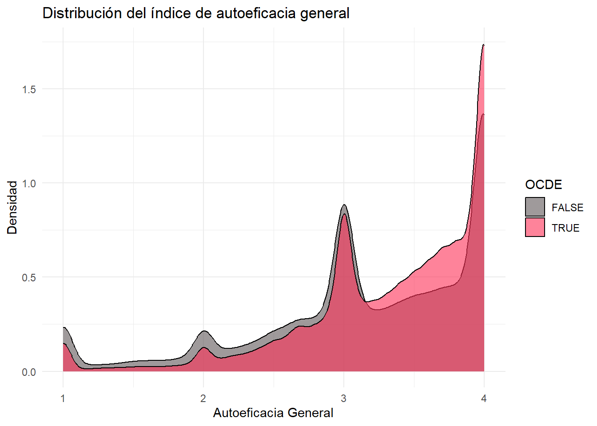
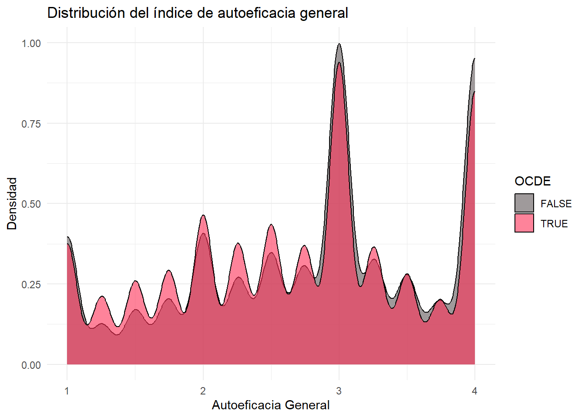
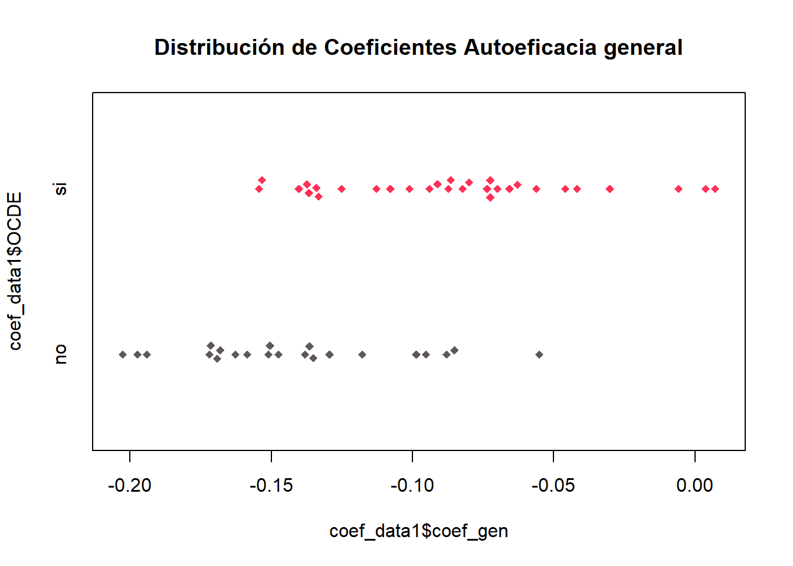

pacman::p_load(dplyr, haven, psych, purrr, tidyr, sjPlot, ggplot2, parameters, table1, beeswarm, openxlsx)
options(scipen = 999)
rm(list = ls()) PISA 2022
Análisis factorial y modelos lineales por país
pisa22ict <- readRDS("input/proc_data/pisa22ict.rds")Análisis factorial por país
#Datos para el análiis factorial
eff_data <- pisa22ict %>%
select(CNT, IC183Q01JA, IC183Q02JA, IC183Q03JA, IC183Q04JA, IC183Q05JA,
IC183Q07JA, IC183Q08JA, IC183Q09JA, IC183Q10JA, IC183Q12JA,
IC183Q13JA, IC183Q14JA, IC183Q15JA, IC183Q16JA)
# Group by CNT (código país)
resultados_factoriales <- eff_data %>%
group_by(CNT) %>%
group_split() %>%
map(~ fa(select(.x, -CNT), nfactors = 2, fm = "pa", rotate = "promax"))Loading required namespace: GPArotation# Tabla con todos los resultados por país
tabla_resultados <- map2_dfr(
resultados_factoriales,
unique(eff_data$CNT),
~ tibble(
Variable = rownames(.x$loadings),
CNT = .y,
CargaFactor1 = .x$loadings[, 1],
CargaFactor2 = .x$loadings[, 2]
)
) %>%
arrange(Variable)
view_df(tabla_resultados)| ID | Name | Label | Values | Value Labels |
| 1 | Variable | <output omitted> | ||
| 2 | CNT | Country code 3-character | ALB ARE ARG AUS AUT BEL BGR BRA BRN CAN CHE CHL COL CRI CZE <...> |
<output omitted> |
| 3 | CargaFactor1 | range: -0.2-1.0 | ||
| 4 | CargaFactor2 | range: -0.3-1.0 | ||
View(tabla_resultados)
tabla_resultados# A tibble: 728 × 4
Variable CNT CargaFactor1 CargaFactor2
<chr> <chr+lbl> <dbl> <dbl>
1 IC183Q01JA ALB [Albania] 0.921 -0.0975
2 IC183Q01JA ARG [Argentina] 0.896 -0.210
3 IC183Q01JA AUS [Australia] 0.910 -0.193
4 IC183Q01JA AUT [Austria] 0.860 -0.207
5 IC183Q01JA BEL [Belgium] 0.852 -0.176
6 IC183Q01JA BRA [Brazil] 0.968 -0.244
7 IC183Q01JA BRN [Brunei Darussalam] 0.937 -0.188
8 IC183Q01JA BGR [Bulgaria] 0.817 -0.185
9 IC183Q01JA CHL [Chile] 0.869 -0.183
10 IC183Q01JA TAP [Chinese Taipei] 0.897 -0.189
# ℹ 718 more rowsModelos de regresión lineal por país
# Crear modelos generales y específicos agrupados por código de país
modelo_effgen <- pisa22ict %>%
group_by(CNT) %>%
nest() %>%
mutate(modelo = map(data, ~lm(effgen ~ sex, data = .x)))
modelo_effspec <- pisa22ict %>%
group_by(CNT) %>%
nest() %>%
mutate(modelo = map(data, ~lm(effspec ~ sex, data = .x)))
# Extraer resúmenes individuales, manteniendo el CNT
models_effgen <- modelo_effgen %>%
mutate(summary = map(modelo, summary)) %>%
select(CNT, summary)
models_effspec <- modelo_effspec %>%
mutate(summary = map(modelo, summary)) %>%
select(CNT, summary)
View(models_effgen[[2]][[1]][["coefficients"]][[2]])
# Crear un dataframe con las betas de los modelos
coef_data1 <- data.frame(
coef_gen = sapply(1:52, function(i) models_effgen[[2]][[i]][["coefficients"]][[2]]), Countrie = models_effgen [1]
)
coef_data2 <- data.frame(
coef_spec = sapply(1:52, function(i) models_effspec[[2]][[i]][["coefficients"]][[2]]), Countrie = models_effspec [1]
)
# Creamos variable de si el país está en la OCDE
aux <- c("no", "no", "si", "si", "si", "no", "no", "no", "si", "no", "si", "no", "si", "si", "no", "si", "si", "no", "si", "si", "no", "si", "si", "si", "si", "si", "si", "no", "no", "si", "si", "si", "no", "no", "no", "no", "no", "si", "si", "no", "no", "si", "si", "si", "si", "si", "no", "si", "no", "si", "si", "no")
df_aux <- data.frame(OCDE = aux) # Convertimos en data.freame
coef_data1 <- cbind(coef_data1, df_aux) # Unimos al data frame de las betas
coef_data2 <- cbind(coef_data2, df_aux) # Unimos al data frame de las betas
rm(df_aux, aux) # Removemos objetos auxiliaresAnálisis descriptivo y visualización de estimadores por país
pvalue <- function(x, ...) {
# Construct vectors of data y, and groups (strata) g
y <- unlist(x)
g <- factor(rep(1:length(x), times=sapply(x, length)))
if (is.numeric(y)) {
# For numeric variables, perform a standard 2-sample t-test
p <- t.test(y ~ g)$p.value
} else {
# For categorical variables, perform a chi-squared test of independence
p <- chisq.test(table(y, g))$p.value
}
# Format the p-value, using an HTML entity for the less-than sign.
# The initial empty string places the output on the line below the variable label.
c("", sub("<", "<", format.pval(p, digits=3, eps=0.001)))
}
# Descrpitivos de los estimadores por país
df_aux <- cbind(coef_data1, coef_data2)
tabla_descr <- table1::table1(~ coef_gen + coef_spec + OCDE, data=df_aux, topclass="Rtable1-zebra", caption = "Tabla 1: Estadísticos Descriptivos Estimadores",
footnote = "Fuente: Elaboración propia con datos de PISA.")
tabla_descr2 <- table1::table1(~ coef_gen + coef_spec | OCDE, data=df_aux, topclass="Rtable1-zebra", overall=FALSE, extra.col=list(`P-value`=pvalue), caption = "Tabla 2: Comparación OCDE y no OCDE",
footnote = "Fuente: Elaboración propia con datos de PISA.")Tabla descriptivos estimadores
tabla_descr #La tabla se visualiza así por incompatibilidad del paquete con qmd. Sin embargo cuando se renderiza en html se ve bien| Overall (N=52) |
|
|---|---|
Fuente: Elaboración propia con datos de PISA. | |
| coef_gen | |
| Mean (SD) | -0.109 (0.0507) |
| Median [Min, Max] | -0.110 [-0.203, 0.00712] |
| coef_spec | |
| Mean (SD) | 0.145 (0.117) |
| Median [Min, Max] | 0.147 [-0.0924, 0.404] |
| OCDE | |
| no | 22 (42.3%) |
| si | 30 (57.7%) |
Desviación estándar en los estimadores de autoeficacia específica es mucho mayor.
Tabla comparativa países OCDE y no OCDE
tabla_descr2 #La tabla se visualiza así por incompatibilidad del paquete con qmd. Sin embargo cuando se renderiza en html se ve bien| no (N=22) |
si (N=30) |
P-value | |
|---|---|---|---|
Fuente: Elaboración propia con datos de PISA. | |||
| coef_gen | |||
| Mean (SD) | -0.142 (0.0391) | -0.0848 (0.0445) | <0.001 |
| Median [Min, Max] | -0.149 [-0.203, -0.0551] | -0.0844 [-0.154, 0.00712] | |
| coef_spec | |||
| Mean (SD) | 0.0533 (0.0824) | 0.212 (0.0889) | <0.001 |
| Median [Min, Max] | 0.0576 [-0.0924, 0.187] | 0.207 [0.0299, 0.404] | |
En ambas autoeficacias (específica y general), se percibe una diferencia significativa (p < 0,001) entre los países que pertenecen a la OCDE y los que no. Los datos apuntan a que la diferencia en autoeficacia específica es considerablemente mayor en los países de la OCDE, lo cual creo que podría deberse a una falta de recursos, que impide a los hombres (más interesados en aprender habilidades específicas) de países menos desarrollados diferenciarse en tal magnitud con las mujeres. Esto podría ir en la linea del planteamiento de Nicolás, que la batería estaría midiendo más habilidades que autoeficacias. En la autoeficacia general el efecto es contrario, o sea, los hombres reportan muchas menores capacidades generales que las mujeres en los países no-OCDE que en los si-OCDE.
# Visualización de las distribuciones de las betas
beeswarm::beeswarm(coef_data1$coef_gen,
horizontal=TRUE,
method="swarm",
col=c("#fe3057"),
cex=1,
pch=18,
main= "Distribución de Coeficientes Autoeficacia general",
)
beeswarm::beeswarm(coef_data2$coef_spec,
horizontal=TRUE,
method="swarm",
col=c("#fe3057"),
cex=1,
pch=18,
main= "Distribución de Coeficientes Autoeficacia Específica",
)
# Visualización de las distribuciones de las betas, según país OCDE o no
beeswarm::beeswarm(coef_data1$coef_gen ~ coef_data1$OCDE,
horizontal=TRUE,
method="swarm",
col=c("#5f5758", "#fe3057"),
cex=1,
pch=18,
main= "Distribución de Coeficientes Autoeficacia general",
)
beeswarm::beeswarm(coef_data2$coef_spec ~ coef_data2$OCDE,
horizontal=TRUE,
method="swarm",
col=c("#5f5758", "#fe3057"),
cex=1,
pch=18,
main= "Distribución de Coeficientes Autoeficacia Específica",
)
Propongo instigar en los casos límites de ambos grupos
En los países OCDE, Chile es el que presenta menor diferencia en autoeficacia específica, lo cual se alinearía con la hipótesis presentada